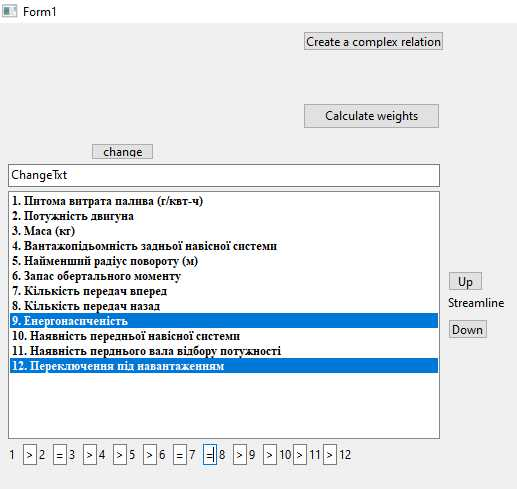
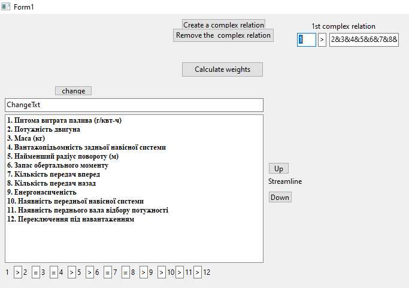
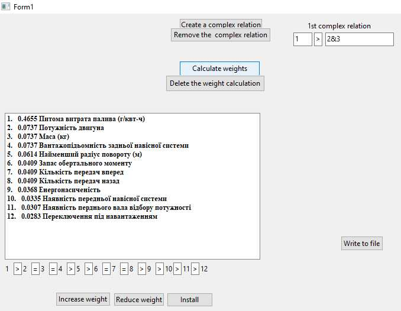
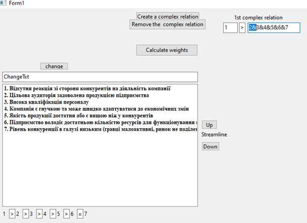
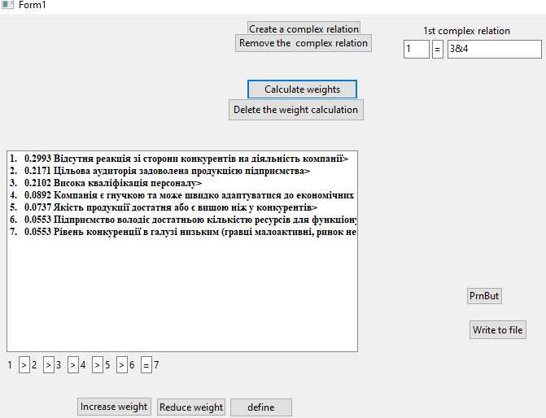
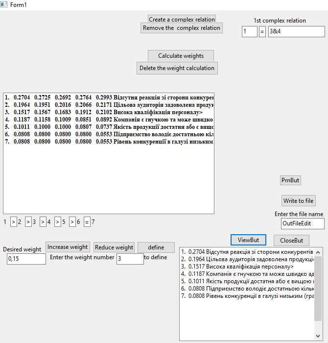

ЕКСПЕРТ
ПРОГРАМА ПЕРЕТВОРЕННЯ ЕКСПЕРТНИХ ЯКІСНИХ ХАРАКТЕРИСТИК ОБ’ЄКТІВ В КІЛЬКІСНІ ОЦІНКИ
Запропонований метод (дивись тут, далі МЕТОД), використаний в програмі перетворення, включає ранжування якісних показників, визначення інтервалів значущості вагомостей цих показників, знаходження точкового значення вагомості кожного показника в середині інтервалу та, у разі потреби, коригування отриманих вагомостей. Описаний метод не вимагає від експертів будь-яких числових характеристик цих показників і цим значно поліпшує їх роботу та підвищує достовірність висновків останніх.
Програма перетворення дозволяє отримати кількісні експертні оцінки значення якісних показників дослі́джуємого об’єкту. Відомі такі способи отримання кількісних експертних оцінок [1. Anna I. Lisovenko, Oleg V. Bisikalo. Expert assessment of a revalent of replies of the automated system of support of dialogue for distance learning. The journal “Automation technological and business - processes”. Volume 8, Issue 3 /2016]:
- ранжування;
- попарне порівняння;
- бальні оцінки.
Недоліком методу ранжування є нетранзитивність експертних оцінок при великій кількості показників. Пояснімо нетранзитивність оцінок на такому прикладі. Так, якщо показник А важливіше показника В, а В важливіше показника С, то людина при великій кількості показників (більш 7, а у експертів (по латині expertus — «досвідчений») – більш 14) при попарному порівнянні може сказати, що С важливіше ніж А. Численні експерименти по порівнянню різних альтернатив показали, що люди при цих порівняннях ведуть себе нетранзитивно: відсоток помилок нетранзитивності досягає величини 27 – 40 %. [2. Ларичев О. И. Наука і мистецтво прийняття рішень. – М.: Наука, 1979. ].
В МЕТОД, [3. Чебан О. Д. Перетворення експертних якісних характеристик об’єктів в кількісні оцінки. – Економічна кібернетика. Міжнародний науковий журнал. № 3-4’ 2002] і в програмі, яка тут описується, використана структура, в якій зберігаються якісні характеристики об’єктів, і ця структура - транзитивна. Зверху розташовані більш вагомі показники, нижче менш. При будь-якій кількості для упорядкування характеристик експерт може тільки за допомогою програми (відповідних кнопок) переставити характеристики в структурі. Отже обмеження кількості показників в програмі знято.
Крім простих відношень упорядкування в програмі передбачений ввід складних відношень типу: «Важливість другого показника більше четвертого, п’ятого, разом взятих»; «Вагомість шостого показника дорівнює сумі вагомостей сьомого і восьмого» тощо.
Максимальна кількість показників, яка закладена в програмі перетворення, дорівнює 25. Після упорядкування якісних показників програма розраховує кількісні оцінки, які потім можна коригувати. В програму можна ввести характеристики, які упорядковані другим або третім способом, і використати програму лише для розрахунку та коригування. Завдяки транзитивній структурі , в якій зберігаються якісні показники, стало можливим обробляти об’єкти, у яких кількість характеристик перевищує 14.
Для користування програмою потрібно сформувати текстовий документ і в нього ввести якісні показники об’єкта. Розглянемо роботу програми на прикладах.
Перший демонстраційний приклад взятий з [Н. Кононенко. Метод експрес-аналізу рівня конкурентоспроможності продукції. - Ж. «Економіка України, 1998р. №2, с 80-83] і складається з показників якості тракторів, які значною мірою впливають на конкурентоспроможність машин. Список показників якості можна ввести з файлу tractor.txt (натисніть кнопку «Browse» та виберіть цей файл). Двічі клацніть лівою клавішою по полю нижче кнопки «Browse». На екрані з’явиться список показників.
 Перший крок експерта в цій програмі це ранжування заданих показників якості трактора по їх важливості для його конкурентоспроможності відповідно до нижнього рядка на екрані: 1>2>3>4>5>6>7>8>9>10>11>12.
Перший крок експерта в цій програмі це ранжування заданих показників якості трактора по їх важливості для його конкурентоспроможності відповідно до нижнього рядка на екрані: 1>2>3>4>5>6>7>8>9>10>11>12.
За допомогою кнопок «Up» та «Down» Ви можете упорядкувати список показників так, як це зробили ведучі спеціалісти тракторобудування:
Зупинимося детальніше на процесі упорядкування. Розглянемо такий приклад. Щоб перемістити найбільш важливий показник "Питома витрата палива", який знаходиться в сьомому рядку (Скріншот 1) на перше місце, потрібно відзначити лівою клавішею миші сьомий і перший рядок, а потім натиснути кнопку «Up». Якщо треба перемістити показник на один рядок вгору або вниз, достатньо відзначити тільки цей показник та натиснути відповідну кнопку.
Деякі показники, на думку спеціалістів, мають однакову вагу. Це потрібно відзначити в рядку під списком. Так "Потужність двигуна" та "Маса" однаково важливі для оцінки конкурентоспроможності трактора. Тому між номерами 2 і 3 (нумерація відповідає зранжованому списку Скріншот 2) в останньому рядку на екрані слід змінити знак ">" на знак "=". Також це слід зробити і зі знаками між номерами 6, 7 та 8. (Для заміни знаку потрібно клацнути лівою клавішею на відповідному віконці, натиснути кнопку "Delete" або "Backspace" на клавіатурі, а потім натиснути клавішу "="). В результаті нижній рядок матиме вигляд:
1>2=3>4>5>6=7=8>9>10>11>12.
Для побудови складних відношень типу (2) (див. МЕТОД) натисніть кнопку " Create a complex relation". Внизу з'явиться рядок, в віконце якого потрібно записати номер показника. Він повинен бути меншим загальної кількості показників хоча б на 2. В нашому випадку менш 11, адже в правій частині складного відношення типу (2) може бути два і більше членів. Якщо двічі клацнути на віконці, то праворуч з'являться два віконця. Перше зі знаком ">". Цей знак можна змінити на знак "<" або "=". В правому віконці висвітлюються всі номери показників, більші номера в лівому віконці. Вони з'єднані знаком "&". Експерт повинен видалити зайві номери з відповідними знаками "&". (Видалення виконується за допомогою клавіші "Delete"). Якщо ми хочемо, щоб вагомість якого-небудь показника мало відрізнялась від вагомости суміжних показників, можна ввести складне відношення такого типу: 1 < 2&3. Останнє відношення можна прочитати так: "Важливість першого показника менше важливості другого та третього показників, разом взятих".
Після ранжування і побудови простих і складних відношень можна одержати вагомості показників, натиснувши кнопку «Calculate weights». В результаті розв'язування задачі лінійного програмування зліва перед показниками з'явиться стовпчик вагомости цих показників.
Цей розрахунок вагомостей можна надрукувати і, якщо він повністю задовольняє експерта, вийти з підпрограми перетворення якісних оцінок утверджень в кількісні, натиснувши кнопку в правому верхньому кутку.
Одержані вагомості можна коригувати, натиснувши одну з кнопок «Increase weight» «Reduce weight» або «define». Якщо натиснути одну з кнопок «Increase weight» або «Reduce weight», то в результаті з'явиться віконце «Correction %», в яке вносять кількість відсотків, по умовчуванню 10, далі номер показника, вагомість якого потрібно відкоригувати. Після двійного щигля на цьому віконці вагомості будуть змінені з дотриманням введених простих і складних обмежень (4-6) (див. МЕТОД). Кнопкою «define» можна визначити вагомість заданого показника. Зліва в списку показників з'явиться новий стовпчик з перерахованими вагомостями.

Можна усунути розраховані вагомості, натиснувши відповідну кнопку «Delete the weight calculation», і почати перетворення якісних оцінок спочатку.
Натиснувши кнопку «Write to file» в вибраний файл буде записано крайній лівий стовпчик вагомостей та показники. Натиснувши кнопку «ViewBut» на екрані побачимо зміст файлу.

Другий демонстраційний приклад [4. Аналіз конкурентних стратегій підприємств малого та середнього бізнесу. Сумський державний університет. Суми. 2020]:
Введемо складне відношення 1=3&4 (вагомість першого показника дорівнює сумі третього та четвертого показників) натиснувши кнопку «Create a complex relation». В ліве віконце введемо «1», знак «>» замінимо на «=», в третьому віконці вилучимо зайві знаки. Проведемо розрахунок:
Кнопкою «define» задаємо вагомість 6-го показника (0,08). Потім вагомість 5-го показника (0,10), далі 4-го (0,12) та 3-го (0,15):
В третьому прикладі (танкер) кількість показників більше 14:

Можливий алгоритм упорядкування:
- Вибрати найбільш важливий показник і помістити його в 1-й рядок.
- Вибрати показник з останнього рядку.
- Порівняти вибраний з показником у 2-му рядку.
- Якщо вибраний показник важливіше показника з 2-го рядка, то перемістити вибраний показник в 2-й рядок і перейти до п.2.
- Якщо вибраний показник менш важливий порівнюваного показника, то треба порівняти з показником наступного рядка.
- Якщо вибраний показник важливіше показника наступного рядка, то перемістити вибраний показник в цей наступний рядок і перейти до п.2.
- Якщо вибраний показник не вдалося перемістити, то вибираємо показник з попереднього рядка і переходимо до п. 3.
 Після розрахунку:
Після розрахунку:

МЕТОД ПЕРЕТВОРЕННЯ ЕКСПЕРТНИХ ЯКІСНИХ ХАРАКТЕРИСТИК ОБ’ЄКТІВ В КІЛЬКІСНІ ОЦІНКИ
Метод [Чебан О. Д. Перетворення експертних якісних характеристик об’єктів в кількісні оцінки. – Економічна кібернетика. Міжнародний науковий журнал. № 3-4’ 2002] дозволяє визначити в кількісній формі важливість, вагомість будь-яких характеристик (показників) об’єктів, заданих якісними оцінками. Причому від експерта не вимагається числових характеристик показників, наприклад, бальних оцінок. Достатньо зранжувати задані показники по їх важливості, тобто задати інформацію, яка упорядковує вагомості: Pi Pj , i j, i,j = 1,2,...,n, (1) де n - кількість заданих показників; символом Pi позначена суб'єктивна оцінка вагомості i-го показника. Це інформація типу:
- "Перший показник важливіше другого";
- "Третій і четвертий показники однаково вагомі".
Окрім простого ранжування припускається, що експерт спроможний дати інформацію про більш складні обмеження, які істотно уточнюють значення шуканих вагомостей:
Pk Pі + Pj, i j k, i,j,k = 1,2,...,n. ( 2 )
Це інформація типу:- "П'ятий показник більш важливий, ніж сума шостого та сьомого";
- "Сьомий показник має таку ж вагу, як восьмий, дев'ятий, десятий, разом взяті";
- "Вагомість одинадцятого менше вагомості дванадцятого і тринадцятого, разом взятих".
З такої інформації можна одержати верхню та нижню оцінки вагомостей кожного показника, якщо розв'язати 2n задач пошуку максимума і мінімума лінійної форми при лінійних обмеженнях, які можна вивести з співвідношень (1) та (2). Пошук нижньої (верхньої) межі оцінки ваги і-го показника зводиться до розв'язання такої задачі лінійного програмування:
Знайти
min(max)[ Pi] ( 3 )при обмеженнях:
Pі - Pj 0, ( 4 ) Pk - Pi - Pj 0, ( 5 ) Pi = 1, ( 6 ) Pі 0. ( 7 ) Тут i j k, i,j,k = 1,2,...,n.Обмеження типу ( 4 ) і ( 5 ) одержані з вхідних нерівностей ( 1 ) і ( 2 ) з наступним переносом правої частини в ліву. Умова ( 6 ) відзеркалює той факт, що всі показники утворюють повну групу несумісних подій (сума вагомостей дорівнює одиниці).
Якщо експерт обмежується простим ранжуванням і не вводить складні обмеження типу (2) , то в програмі, реалізуючій цей метод, верхні та нижні оцінки вагомостей розраховуються за допомогою формул, в яких ці оцінки є функціями порядкового номера показника в зранжованому ряду та знака ">" або "=", який стоїть перед цим показником. Якщо в наявності є складні обмеження, то задача находження верхніх і нижніх оцінок вагомостей розв'язується симплексним методом ( 3 – 7 ).
В програмі прості відношення типу ( 1 ) створюються автоматично в вигляді зранжованого ряду:
P1 > P2 > P3 >,..., >Pn . ( 8 )
Експерту достатньо відповідно до цього ряду упорядкувати список показників і де потрібно змінити знак ">" на "=". Завдяки "дружньому інтерфейсу", розробленому в програмі, легко упоратись з ранжуванням, побудовою простих відношень типу (1), уникнути помилок нетранзитивності експертних оцінок. Пояснімо нетранзитивність оцінок на такому прикладі. Так, якщо показник A важливіше показника B, а B важливіше показника C, то людина при великій кількості показників (більш 7, для експертів – більш 14) при попарному порівняні може сказати, що C важливіше ніж A. Численні експерименти по порівнянню різних альтернатив показали, що люди при цих порівняннях ведуть себе нетранзитивно: відсоток помилок нетранзитивності досягає величини 27 - 40% [Ларичев О.И. – М.: Наука і мистецтво прийняття рішень, 1979]. Розроблена в програмі структура списку показників з відповідним механізмом перестановки показників виключає нетранзитивні помилки (більш детально в першому прикладі).
В зв'язку з тим, що людині, як правило, важко побудувати багато складних відношень, кількість складних відношень обмежена трьома. Ввід складних відношень типу ( 2 ) автоматизований і також ураховує нетранзитивну поведінку людей. Розроблена в програмі структура побудови простих і складних відношень дозволяє значно знизити імовірність нетранзитивних помилок і, як наслідок, несумісність системи обмежень ( 4 - 6 ).
Після знаходження нижньої і верхньої межі оцінки вагомості кожного показника, тобто інтервального значення кожної ваги, необхідно знайти точкове значення ваги всередині інтервалу. Точкові значення знаходим, виходячи з принципу найменшого відхилення від середини інтервалу. Ці відхилення обчислюються пропорціонально ширині інтервалу. При цьому, звичайно, повинні додержуватись обмеження ( 4 ), (5 ) та ( 6 ). Це досягається організацією ітераційного процесу, в кожній ітерації котрого зменшуються порушення обмежень ( 4 ), ( 5 ) та ( 6 ). Цей ітераційний процес - збіжний. Як правило, достатньо однієї - двох ітерацій для одержання результату.
В програмі передбачена можливість дальшої корекції окремих вагомостей (збільшення, зменшення або визначення). Вагомість може змінюватися в межах верхньої та нижньої границь, обчислених в результаті розв’язання задачі лінійного програмування ( 3 – 7 ). Задана в діалозі вагомість змінюється за один раз на 7 - 10 відсотків. Зміна в програмі відбувається в два етапи. Спочатку вибрана вагомість змінюється в заданому напрямку (збільшення або зменшення) на 10%. Потім включається ітераційний процес змінення всіх вагомостей для того, щоб виконувались прості ( 4 ), складні ( 5 ) обмеження та умова ( 6 ) - сума всіх вагомостей повинна дорівнювати одиниці. В цьому ітераційному процесі задана вагомість в результаті може змінюватися на величину меншу, ніж 10%. Можливість корекції дозволяє експерту провадити достатньо точне настроювання оцінок показників.
Функція корекції заданої вагомості являє собою поверхню в n-мірному просторі (n - кількість показників) в вигляді яру, дно та верхній край якого обмежуються комбінаціями інтервальних оцінок вагомостей. При цьому середня частина цієї поверхні виявляється гладкою. Поблизу верхнього краю та дна цієї поверхні при деяких комбінаціях простих і складних обмежень можуть бути ями. При влученні в яму в програмі передбачена зміна алгоритму корекції вагомості. Так при збільшенні вагомості показника, який знаходиться в середині зранжованого ряду, на першому етапі, перед ітераційним процесом, зменшуються пропорціонально своїм інтервалам вагомості показників, які знаходяться зліва. При влученні в яму програма змінює вагомості, які знаходяться праворуч. Також передбачений алгоритм одночасної зміни вагомостей показників, котрі знаходяться як праворуч так і ліворуч від заданої вагомості. Для роботи з розробленою програмою достатньо:
- зранжувати показники;
- визначити тотожність деяких показників за їх вагомістю;
- можливо, ввести складні відношення між деякими показниками;
- розрахувати вагомості показників, натиснувши відповідну кнопку;
- якщо потрібно, відкоригувати співвідношення між отриманими вагомостями.
Відмова від вимоги числових оцінок показників набагато спрощує роботу експертів та підвищує достовірність висновків останніх. Проведені за допомогою пакета "EXPERT" розрахунки рівнів конкурентоспроможності продукції вітчизняних та зарубіжних виробників (суднобудівні заводи, металургійні комбінати, тракторні заводи), порівняльних характеристик вищих учбових закладів показали, що отримані результати повністю збігаються з попередніми висновками експертів. Останні, які використовували бальні оцінки, були змушені витратити на розрахунки вагомостей та оцінок показників значно більше часу та зусиль. Крім того, пакет "EXPERT" дозволяє з більш високою точністю розраховувати вагомості показників, оскільки в ньому є механізм тонкого налаштування співвідношень вагомостей.
Завантажити, якщо можете, допоможіть на ліки (надішліть на поштову скриньку: mail@mail.com Вашу електрону адресу з темою: «Для допомоги», щоб міг передати платіжні реквізити)
Завантажити